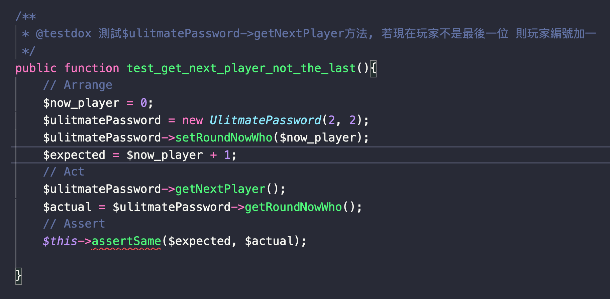

在我進入目前公司前，我對測試是陌生的，不了解測試能對程式開發有什麼幫助，而在進入後，主管給我一個任務，讓我實際體會寫測試的好處，今天我想把這項體驗分享給大家。
而在體驗開始之前，讀者若有以下知識，了解起來會相對輕鬆：
若沒問題的話，就讓我們開始一同體會吧！
首先跟大家說一下任務是什麼，我要時做出一個終極密碼的遊戲，這個遊戲的規則如下
這隻程式開發過程經歷過三個階段
寫邏輯的階段並沒有遇到太大困難點，主要就是直接將邏輯條列下來，並運用 symfony 進行開發，並沒有想著要如何將程式拆解，但在這時會發現一個問題，沒辦法寫測試，應該說因為邏輯跟互動介面全部擠在一起，若要寫測試的話會相當複雜，於是我們必須進行重構，本次重構有兩個目標：
我們成功將終極密碼的遊戲邏輯重構並模組化，這樣一來我們就能很輕易地將程式搬到 Laravel Commands 上了，且能針對遊戲邏輯的部份開始寫測試。
在寫測試的過程當中，也會注意到哪些遊戲邏輯拆分的不夠好，需要再拆的更細一些，於是在這來來回回修改過程中，終於把測試給寫好。
寫測試就是為了確認程式是照著自己的預期執行，但他帶給我們另一個附加效果，讓程式模組化，因為在寫測試的過程中若遇到不好寫的情況，就可以思考是不是某的方法不只做了一件事情。
那講到寫測試就一定要提到 3A 原則。
他算是寫測試的一個 SOP 吧，若照著這個方法走，寫出來的測試也會比較好閱讀。那以下是我利用 #A 原則撰寫"取得下一位玩家"這個方法的一個測試程式碼。

稍微講解一下，首先我們先讓遊戲內的現在玩家設為第 0 位，於是我們預期當程式執行完"取得下一位玩家"這個方法後，回傳的結果應該是第 1 位玩家。
寫測試不只是讓寫完的程式能夠自動化的被測試，他也有附加好處，就是能夠有效的將程式模組化，而模組化後，我們就可以很輕鬆的將遊戲邏輯應用在其他地方，讓我從 symfony 要搬到 Laravel Commands 上使用時更加順利，若大家有興趣可以下載原始碼來看看，謝謝大家收看。